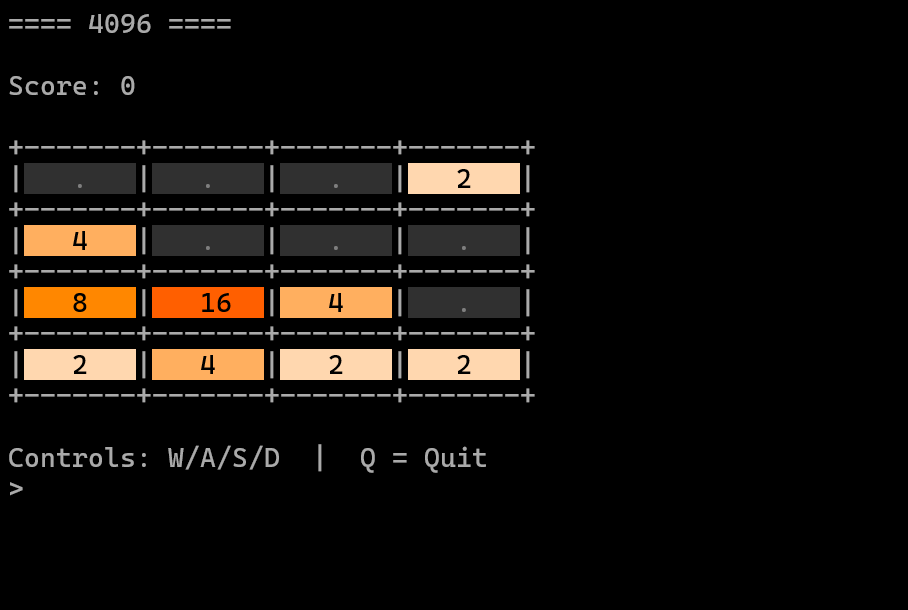

py4096
Overview
py4096 is a terminal-based implementation of the 4096 puzzle game designed entirely for command-line environments.
The project focuses on lightweight gameplay, ANSI-rendered visuals, and minimal dependencies while preserving the core mechanics of tile merging and score progression.
The system is distributed as a Python package and can be installed directly through pip.
Gameplay System
The board operates on a 4×4 grid where tiles merge when identical values collide during directional movement.
Movement logic is implemented through board rotation and left-shift operations, allowing all directional inputs to share a single merge pipeline.
Input (W/A/S/D)
↓
Board Rotation
↓
Left Merge Logic
↓
Tile Compression
↓
Random Tile Spawn
↓
Win / Lose Detection
Terminal Rendering
The interface uses ANSI escape sequences to render colored tiles directly inside the terminal.
Each tile value maps to a dedicated background color, allowing larger values to become visually distinguishable during gameplay.
| Tile | Rendering Style |
|---|---|
| 2 / 4 | Light neutral tones |
| 8 / 16 | Orange spectrum |
| 32 / 64 | Red spectrum |
| 128+ | High-contrast color states |
Controls
| Action | Key |
|---|---|
| Move Up | W |
| Move Left | A |
| Move Down | S |
| Move Right | D |
| Quit | Q |
Implementation
The project is structured around modular board logic, rendering systems, and terminal interaction loops.
- Board initialization and tile generation
- Rotation-based directional movement
- Tile merge and compression systems
- ANSI terminal rendering
- Win and game-over detection
Gameplay execution runs through a continuous input loop managed by the CLI runtime.
Distribution
The project is distributed through PyPI and can be installed globally using pip.
pip install py4096
After installation:
py4096
Screenshots

Development Notes
The project originated as an experiment in building interactive terminal applications with minimal runtime complexity.
Development focused heavily on board transformation logic, reusable movement systems, and visually readable ANSI rendering.
The rotation-based movement pipeline simplified directional handling while keeping gameplay behavior deterministic.